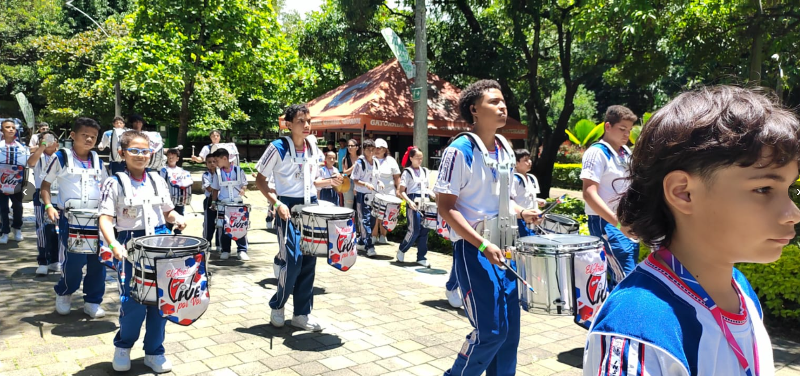

Una guía para descubrir la Media Técnica ideal para ti
Elegir una media técnica es un paso importante. Esta guía te ayudará a entender las habilidades requeridas, lo que aprenderás y las oportunidades que cada una ofrece. Analiza tus gustos y fortalezas para tomar la mejor decisión.

Ideal para quienes disfrutan de la lógica, resolver problemas complejos y crear soluciones tecnológicas. Aprenderás a "hablar" el idioma de las computadoras.

Para los apasionados por el arte sonoro. No es solo tocar instrumentos, es entender el lenguaje musical, la teoría y la disciplina detrás del arte.

Si te preocupa el planeta y quieres ser parte de la solución. Enfocada en la conservación, biología y el manejo responsable de los recursos.

La unión entre tecnología y creatividad visual. Perfecta para quienes quieren comunicar ideas a través de gráficos, videos y multimedia.